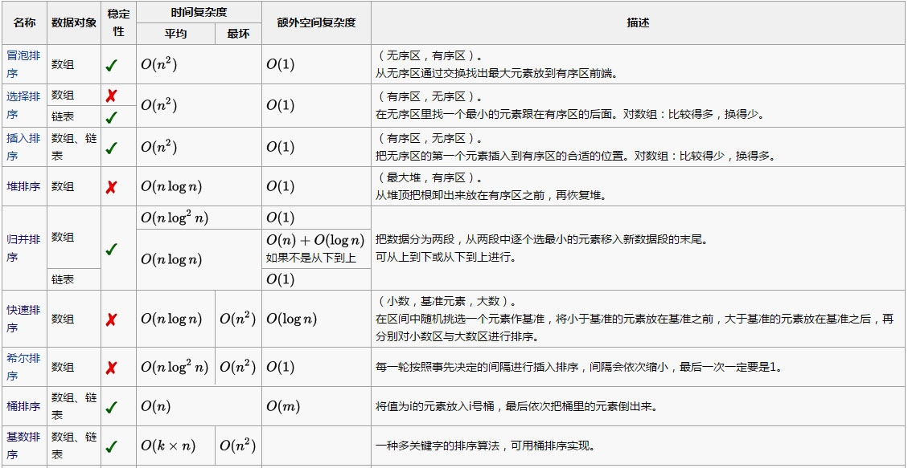
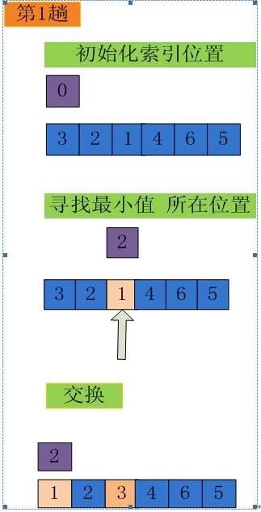
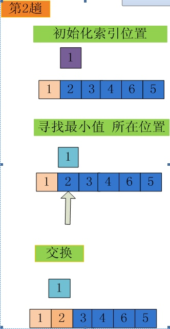
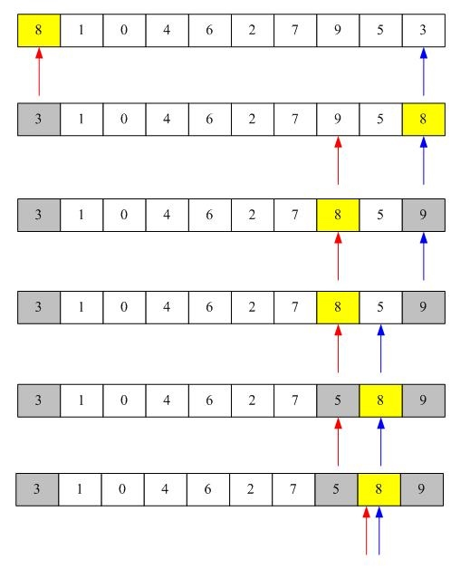
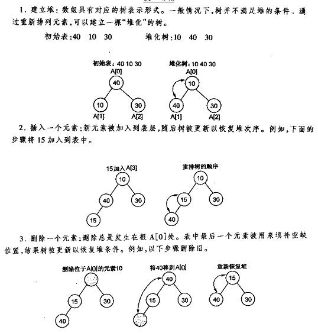
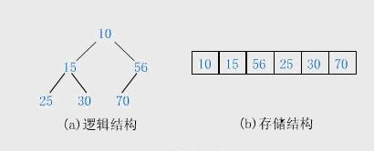

6. 各种排序：冒泡、选择、插入、希尔、归并、快排、堆排、桶排、基数的原理、平均时间复杂度、最坏时间复杂度、空间复杂度、是否稳定。
6.1 对比分析图

均按从小到大排列
k代表数值中的"数位"个数
n代表数据规模
m代表数据的最大值减最小值
6.2 冒泡排序
冒泡排序通过重复地走访过要排序的数列，一次比较两个元素，如果他们的顺序错误就把他们交换过来，直到没有再需要交换的元素为止对n个项目需要 O( n2 )的比较次数。这个算法的名字由来是因为越小的元素会经由交换慢慢“浮”到数列的顶端。
实现步骤
比较相邻的元素。如果第一个比第二个大，就交换他们两个。
对每一对相邻元素做同样的工作，从开始第一对到结尾的最后一对。这步做完后，最后的元素会是最大的数。
针对所有的元素重复以上的步骤，除了最后一个。
持续每次对越来越少的元素重复上面的步骤，直到没有任何一对数字需要比较。
Java实现
public static void main(String[] args) {
int[] number = {95,45,15,78,84,51,24,12};
bubble_sort(number);
for(int i = 0; i < number.length; i++) {
System.out.print(number[i] + " ");
}
}
public static void bubble_sort(int[] arr) {
int temp, len = arr.length;
for (int i = 0; i < len - 1; i++)
for (int j = 0; j < len - 1 - i; j++)
if (arr[j] > arr[j + 1]) {
temp = arr[j];
arr[j] = arr[j + 1];
arr[j + 1] = temp;
}
}
6.3 选择排序
常用的选择排序方法有简单选择排序和堆排序，这里只说简单选择排序，堆排序后面再说。
简单选择排序
设所排序序列的记录个数为n，i 取 1,2,…,n-1 。 从所有n-i+1个记录（Ri,Ri+1,…,Rn）中找出排序码最小（或最大）的记录，与第i个记录交换。执行n-1趟 后就完成了记录序列的排序。
以排序数组｛3，2，1，4，6，5｝为例


简单选择排序性能
在简单选择排序过程中，所需移动记录的次数比较少。最好情况下，即待排序记录初始状态就已经是正序排列了，则不需要移动记录。 最坏情况下，即待排序记录初始状态是按第一条记录最大，之后的记录从小到大顺序排列，则需要移动记录的次数最多为3（n-1）。
简单选择排序过程中需要进行的比较次数与初始状态下待排序的记录序列的排列情况无关。 当i=1时，需进行n-1次比较；当i=2时，需进行n-2次比较；依次类推，共需要进行的比较次数是(n-1)+(n-2)+…+2+1=n(n-1)/2，即进行比较操作的时间复杂度为O( n2 )，进行移动操作的时间复杂度为O(n)。
简单选择排序是不稳定排序
简单选择排序Java实现
public static void main(String[] args) {
int[] number = {3,1,2,8,4,5,24,12};
SimpleSort(number);
for(int i = 0; i < number.length; i++) {
System.out.print(number[i] + " ");
}
}
public static void SimpleSort(int[] arr) {
int length=arr.length;
int temp;
for(int i=0;i<length-1;i++){
int min=i;
for(int j=i+1;j<length;j++){ //寻找最小的数
if(arr[j]<arr[min]){
min =j;
}
}
if(min!=i){
temp = arr[min];
arr[min]=arr[i];
arr[i]=temp;
}
}
}
6.4 希尔排序
希尔排序法(缩小增量法) 属于插入类排序，是将整个无序列分割成若干小的子序列分别进行插入排序的方法。
把记录按下标的一定增量分组，对每组使用直接插入排序算法排序；随着增量逐渐减少，每组包含的关键词越来越多，当增量减至1时，整个文件恰被分成一组，算法便终止。
希尔排序是基于插入排序的以下两点性质而提出改进方法的：
- 插入排序在对几乎已经排好序的数据操作时，效率高，即可以达到线性排序的效率。
- 但插入排序一般来说是低效的，因为插入排序每次只能将数据移动一位。 实现过程
先取一个正整数d1小于n，把所有序号相隔d1的数组元素放一组，组内进行直接插入排序；然后取d2小于d1，重复上述分组和排序操作；直至di=1，即所有记录放进一个组中排序为止。
例如，假设有这样一组数[ 13 14 94 33 82 25 59 94 65 23 45 27 73 25 39 10 ]，如果我们以步长为5开始进行排序，我们可以通过将这列表放在有5列的表中来更好地描述算法，这样他们就应该看起来是这样：
13 14 94 33 82 25 59 94 65 23 45 27 73 25 39 10
然后我们对每列进行排序：
10 14 73 25 23 13 27 94 33 39 25 59 94 65 82 45
将上述四行数字，依序接在一起时我们得到：[ 10 14 73 25 23 13 27 94 33 39 25 59 94 65 82 45 ].这时10已经移至正确位置了，然后再以3为步长进行排序：
10 14 73 25 23 13 27 94 33 39 25 59 94 65 82 45
排序之后变为：
10 14 13 25 23 33 27 25 59 39 65 73 45 94 82 94
最后以1步长进行排序（此时就是简单的插入排序了）。
Java实现
public static void shellSort(int[] a) {
int gap = 1, i, j, len = a.length;
int temp;//插入排序交换值的暂存
//确定初始步长
while (gap < len / 3){
gap = gap * 3 + 1;
}
for (; gap > 0; gap /= 3){//循环遍历步长，最后必为1
for (i = gap; i < len; i++) {//每一列依次向前做插入排序
temp = a[i];
//每一列中在a[i]上面且比a[i]大的元素依次向下移动
for (j = i - gap; j >= 0 && a[j] > temp; j -= gap){
a[j + gap] = a[j];
}
//a[i]填补空白，完成一列中的依次插入排序
a[j + gap] = temp;
}
}
}
6.5 归并排序
归并排序，是创建在归并操作上的一种有效的排序算法该算法是采用分治法（Divide and Conquer）的一个非常典型的应用，且各层分治递归可以同时进行。
即先使每个子序列有序，再将两个已经排序的序列合并成一个序列的操作。若将两个有序表合并成一个有序表，称为二路归并。
设有数列{6，202，100，301，38，8，1} 初始状态：6,202,100,301,38,8，1 第一次归并后：{6,202},{100,301},{8,38},{1}，比较次数：3； 第二次归并后：{6,100,202,301}，{1,8,38}，比较次数：4； 第三次归并后：{1,6,8,38,100,202,301},比较次数：4； 总的比较次数为：3+4+4=11,； 逆序数为14；
迭代实现的实现原理
①申请空间，使其大小为两个已经排序序列之和，该空间用来存放合并后的序列
②设定两个指针，最初位置分别为两个已经排序序列的起始位置
③比较两个指针所指向的元素，选择相对小的元素放入到合并空间，并移动指针到下一位置
④重复步骤③直到某一指针到达序列尾
⑤将另一序列剩下的所有元素直接复制到合并序列尾
Java代码
public static void main(String[] args) {
int [] arr ={6,5,3,1,8,7,2,4};
merge_sort(arr);
for(int i : arr){
System.out.println(i);
}
}
public static void merge_sort(int[] arr) {
int len = arr.length;
//用于合并的临时数组
int[] result = new int[len];
int block, start;
//两两合并后块大小变大两倍 (注意最后一次block等于len)
for(block = 1; block <=len ; block *= 2) {
//把整个数组分成很多个块，每次合并处理两个块
for(start = 0; start <len; start += 2 * block) {
int low = start;
int mid = (start + block) < len ? (start + block) : len;
int high = (start + 2 * block) < len ? (start + 2 * block) : len;
//两个块的起始下标及结束下标
int start1 = low, end1 = mid;
int start2 = mid, end2 = high;
//开始对两个block进行归并排序
while (start1 < end1 && start2 < end2) {
result[low++] = arr[start1] < arr[start2] ? arr[start1++] : arr[start2++];
}
while(start1 < end1) {
result[low++] = arr[start1++];
}
while(start2 < end2) {
result[low++] = arr[start2++];
}
}
//每次归并后把结果result存入arr中，以便进行下次归并
int[] temp = arr;
arr = result;
result = temp;
}
}
递归实现的实现原理
假设序列共有n个元素
①将序列每相邻两个数字进行归并操作，形成floor(n/2)个序列，排序后每个序列包含两个元素。
②将上述序列再次归并，形成floor(n/4)个序列，每个序列包含四个元素
③重复步骤②，直到所有元素排序完毕
Java代码
public static void main(String[] args) {
int [] arr ={6,5,3,1,8,7,2,4};
int len = arr.length;
int[] reg = new int[len];
merge_sort_recursive(arr,reg,0,len-1);
for(int i : arr){
System.out.println(i);
}
}
static void merge_sort_recursive(int[] arr, int[] reg, int start, int end) {
if (start >= end)
return;
int len = end - start, mid = (len >> 1) + start;
int start1 = start, end1 = mid;
int start2 = mid + 1, end2 = end;
//递归到子序列只有一个数的时候，开始逐个返回
merge_sort_recursive(arr, reg, start1, end1);
merge_sort_recursive(arr, reg, start2, end2);
//-------合并操作，必须在递归之后（子序列有序的基础上）----
int k = start;
while (start1 <= end1 && start2 <= end2)
reg[k++] = arr[start1] < arr[start2] ? arr[start1++] : arr[start2++];
while (start1 <= end1)
reg[k++] = arr[start1++];
while (start2 <= end2)
reg[k++] = arr[start2++];
//借用reg数组做合并，然后把数据存回arr中
for (k = start; k <= end; k++)
arr[k] = reg[k];
}
6.6 快速排序
快速排序（Quicksort）是对冒泡排序的一种改进，又称划分交换排序（partition-exchange sort。
快速排序使用分治法（Divide and conquer）策略来把一个序列（list）分为两个子序列（sub-lists）
排序效率
在平均状况下，排序n个项目要Ο(n log n)次比较。在最坏状况下则需要Ο(n2)次比较，但这种状况并不常见。事实上，快速排序通常明显比其他Ο(n log n)算法更快，因为它的内部循环（inner loop）可以在大部分的架构上很有效率地被实现出来。
最差时间复杂度 Ο(n2)
最优时间复杂度 Ο(n log n)
平均时间复杂度Ο(n log n)
最差空间复杂度 根据实现的方式不同而不同
public static void main(String[] args) {
int [] arr = {8,1,0,4,6,2,7,9,5,3};
quickSort(arr,0,arr.length-1);
for(int i :arr){
System.out.println(i);
}
}
public static void quickSort(int[]arr,int low,int high){
if (low < high) {
int middle = getMiddle(arr, low, high);
quickSort(arr, low, middle - 1);
quickSort(arr, middle + 1, high);
}
}
public static int getMiddle(int[] list, int low, int high) {
int tmp = list[low];
while (low < high) {
while (low < high && list[high] >= tmp) {
high--;
}
list[low] = list[high];
while (low < high && list[low] <= tmp) {
low++;
}
list[high] = list[low];
}
list[low] = tmp;
return low;
}

取８为中值，红色箭头表示low，绿色箭头表示high
①从high开始向前扫描到第一个比８小的值与８交换。
②从low向后扫描第一比8大的值与8交换。
③重复①②过程只到，high=low完成一次快速排序，然后递归子序列。
6.7 堆排序
堆排序(Heapsort)是指利用堆这种数据结构所设计的一种排序算法，它是选择排序的一种。可以利用数组的特点快速定位指定索引的元素。堆分为大根堆和小根堆，是完全二叉树。大根堆的要求是每个节点的值都不大于其父节点的值。
由于堆中每次都只能删除第0个数据，通过 取出第０个数据再执行堆的删除操作、重建堆（实际的操作是将最后一个数据的值赋给根结点，然后再从根结点开始进行一次从上向下的调整。），然后再取，如此重复实现排序。
堆的操作：

在堆的数据结构中，堆中的最大值总是位于根节点。堆中定义以下几种操作：
最大堆调整（Max_Heapify）：将堆的末端子节点作调整，使得子节点永远小于父节点
创建最大堆（Build_Max_Heap）：将堆所有数据重新排序
堆排序（HeapSort）：移除位在第一个数据的根节点，并做最大堆调整的递归运算
堆的存储：

通常堆是通过一维数组来实现的。在数组起始位置为0的情形中：
父节点i的左子节点在位置(2*i+1);
父节点i的右子节点在位置(2*i+2);
子节点i的父节点在位置floor((i-1)/2);
Java代码实现
public class HeapSort {
private static int[] sort = new int[]{1,0,10,20,3,5,6,4,9,8,12,17,34,11};
public static void main(String[] args) {
buildMaxHeapify(sort);
heapSort(sort);
print(sort);
}
private static void buildMaxHeapify(int[] data){
//没有子节点的才需要创建最大堆，从最后一个的父节点开始
int startIndex = getParentIndex(data.length - 1);
//从尾端开始创建最大堆，每次都是正确的堆
for (int i = startIndex; i >= 0; i--) {
maxHeapify(data, data.length, i);
}
}
/**
* 创建最大堆
* @param data
* @param heapSize需要创建最大堆的大小，一般在sort的时候用到，因为最多值放在末尾，末尾就不再归入最大堆了
* @param index当前需要创建最大堆的位置
*/
private static void maxHeapify(int[] data, int heapSize, int index){
// 当前点与左右子节点比较
int left = getChildLeftIndex(index);
int right = getChildRightIndex(index);
int largest = index;
if (left < heapSize && data[index] < data[left]) {
largest = left;
}
if (right < heapSize && data[largest] < data[right]) {
largest = right;
}
//得到最大值后可能需要交换，如果交换了，其子节点可能就不是最大堆了，需要重新调整
if (largest != index) {
int temp = data[index];
data[index] = data[largest];
data[largest] = temp;
maxHeapify(data, heapSize, largest);
}
}
/**
* 排序，最大值放在末尾，data虽然是最大堆，在排序后就成了递增的
* @param data
*/
private static void heapSort(int[] data) {
//末尾与头交换，交换后调整最大堆
for (int i = data.length - 1; i > 0; i--) {
int temp = data[0];
data[0] = data[i];
data[i] = temp;
maxHeapify(data, i, 0);
}
}
/**
* 父节点位置
* @param current
* @return
*/
private static int getParentIndex(int current){
return (current - 1) >> 1;
}
/**
* 左子节点position注意括号，加法优先级更高
* @param current
* @return
*/
private static int getChildLeftIndex(int current){
return (current << 1) + 1;
}
/**
* 右子节点position
* @param current
* @return
*/
private static int getChildRightIndex(int current){
return (current << 1) + 2;
}
private static void print(int[] data){
for (int i = 0; i < data.length; i++) {
System.out.print(data[i] + " |");
}
}
}
6.8 桶排序
桶排序（Bucket sort）或所谓的箱排序，是一个排序算法。
假设有一组长度为N的待排关键字序列K[1....n]。首先将这个序列划分成M个的子区间(桶) 。然后基于某种映射函数 ，将待排序列的关键字k映射到第i个桶中(即桶数组B的下标 i) ，那么该关键字k就作为B[i]中的元素。接着对每个桶B[i]中的所有元素进行比较排序(可以使用快排)。然后依次枚举输出B[0]....B[M]中的全部内容即是一个有序序列。
桶排序的步骤：
①设置一个定量的数组当作空桶子。
②寻访序列，并且把项目一个一个放到对应的桶子去。
③对每个不是空的桶子进行排序。
④从不是空的桶子里把项目再放回原来的序列中。
性能
数据结构 数组 最差时间复杂度 O(n2) 平均时间复杂度 O(n+k) 最差空间复杂度 O(n*k)
平均情况下桶排序以线性时间运行，桶排序是稳定的，排序非常快,但是同时也非常耗空间,基本上是最耗空间的一种排序算法。
对N个关键字进行桶排序的时间复杂度分为两个部分：
①循环计算每个关键字的桶映射函数，这个时间复杂度是O(N)。
②利用先进的比较排序算法对每个桶内的所有数据进行排序，其时间复杂度为 ∑ O(Ni*logNi) 。其中Ni 为第i个桶的数据量。
很显然，第②部分是桶排序性能好坏的决定因素。尽量减少桶内数据的数量是提高效率的唯一办法(因为基于比较排序的最好平均时间复杂度只能达到O(N*logN)了)。因此，我们需要尽量做到下面两点：
① 映射函数f(k)能够将N个数据平均的分配到M个桶中，这样每个桶就有[N/M]个数据量。
②尽量的增大桶的数量。极限情况下每个桶只能得到一个数据，这样就完全避开了桶内数据的“比较”排序操作。 当然，做到这一点很不容易，数据量巨大的情况下，f(k)函数会使得桶集合的数量巨大，空间浪费严重。这就是一个时间代价和空间代价的权衡问题了。
Java实现
public class BucketSort {
/**
* 对arr进行桶排序，排序结果仍放在arr中
*/
public static void bucketSort(double arr[]){
//-------------------------------------------------分桶-----------------------------------------------
int n = arr.length;
//存放桶的链表
ArrayList bucketList[] = new ArrayList [n];
//每个桶是一个list，存放此桶的元素
for(int i =0;i<n;i++){
//下取等
int temp = (int) Math.floor(n*arr[i]);
//若不存在该桶，就新建一个桶并加入到桶链表中
if(null==bucketList[temp])
bucketList[temp] = new ArrayList();
//把当前元素加入到对应桶中
bucketList[temp].add(arr[i]);
}
//-------------------------------------------------桶内排序-----------------------------------------------
//对每个桶中的数进行插入排序
for(int i = 0;i<n;i++){
if(null!=bucketList[i])
insert(bucketList[i]);
}
//-------------------------------------------------合并桶内数据-----------------------------------------------
//把各个桶的排序结果合并
int count = 0;
for(int i = 0;i<n;i++){
if(null!=bucketList[i]){
Iterator iter = bucketList[i].iterator();
while(iter.hasNext()){
Double d = (Double)iter.next();
arr[count] = d;
count++;
}
}
}
}
/**
* 用插入排序对每个桶进行排序
* 从小到大排序
*/
public static void insert(ArrayList list){
if(list.size()>1){
for(int i =1;i<list.size();i++){
if((Double)list.get(i)<(Double)list.get(i-1)){
double temp = (Double) list.get(i);
int j = i-1;
for(;j>=0&&((Double)list.get(j)>(Double)list.get(j+1));j--)
list.set(j+1, list.get(j)); //后移
list.set(j+1, temp);
}
}
}
}
}
测试代码：
public static void main(String[] args) {
double arr [] ={0.21,0.23,0.76,0.12,0.89};
BucketSort.bucketSort(arr);
for(double a:arr){
System.out.println(a);
}
}
6.9 基数排序
基数排序（Radix sort）是一种非比较型整数排序算法，其原理是将整数按位数切割成不同的数字，然后按每个位数分别比较。由于整数也可以表达字符串（比如名字或日期）和特定格式的浮点数，所以基数排序也不是只能使用于整数。
将所有待比较数值（正整数）统一为同样的数位长度，数位较短的数前面补零。然后，从最低位开始，依次进行一次排序。这样从最低位排序一直到最高位排序完成以后，数列就变成一个有序序列。
效率
基数排序的时间复杂度是O(k·n)，其中n是排序元素个数，k是数字位数。注意这不是说这个时间复杂度一定优于O(n·log(n))，k的大小取决于数字位的选择和待排序数据所属数据类型的全集的大小；k决定了进行多少轮处理，而n是每轮处理的操作数目。
基数排序基本操作的代价较小，k一般不大于logn，所以基数排序一般要快过基于比较的排序，比如快速排序。
最差空间复杂度是O(k·n)
现在有数组：278，109，63,930,589,184,505,269,8,83 。根据各位数将数组划分为10个链表(当然其中的某些链表可能不含有元素) 第一次分配：
0:930 1: 2: 3:63,83 4:184 5:505 6： 7: 8:278,8 9:109,589,269
第一次收集后的数组：
930,63,83,184,505，278,8,109,589,269
第二次分配：
0:505,8,109 1: 2: 3:930 4: 5: 6：63,269 7:278 8:83,184，589 9:
第二次收集后的数组：
505,8,109，930，63,269，278，83,184，589
第三次分配：
0:8,63,83 1:109,184 2:278,269 3: 4: 5:505,589 6: 7: 8: 9:930
最后得到序列：
8,63,83,109,184，269,278,505,589,930
基数排序其实是利用多关键字先达到局部有序，再调整达到全局有序。
代码实现：
public class Test {
public static void main(String[] args) {
int[] array = {278,109,63,930,589,184,505,269,8,83};
radixSort(array);
for(double a : array){
System.out.println(a);
}
}
public static void radixSort(int[] array){
//------------------------------------------确定排序的趟数----------------------------------
int max=array[0];
for(int i=1;i<array.length;i++){
if(array[i]>max){
max=array[i];
}
}
int time=0;
while(max>0){
max/=10;
time++;
}
//----------------------------------------初始化10个链表用户分配时暂存-------------------------------
List<List<Integer>> list=new ArrayList<List<Integer>>();
for(int i=0;i<10;i++){
List<Integer> item=new ArrayList<Integer>();
list.add(item);
}
//-----------------------------------------进行time次分配和收集-------------------------------------
for(int i=0;i<time;i++){
//分配元素;
for(int j=0;j<array.length;j++){
int index = array[j]%(int)Math.pow(10, i+1)/(int)Math.pow(10, i);
list.get(index).add(array[j]);
}
//收集元素;
int count=0;
for(int k=0;k<10;k++){
if(list.get(k).size()>0){
for(int a : list.get(k)){
array[count]=a;
count++;
}
//清除数据，以便下次收集
list.get(k).clear();
}
}
}
}
}
6.10 插入排序
将一个数据插入到已经排好序的有序数据中，从而得到一个新的、个数加一的有序数据，算法适用于少量数据的排序，是稳定的排序方法。
插入排序又分为 直接插入排序 和 折半插入排序。
直接插入排序
把待排序的纪录按其关键码值的大小逐个插入到一个已经排好序的有序序列中，直到所有的纪录插入完为止，得到一个新的有序序列。
Java实现
public static void insertSort(int a[]){
int j; //当前要插入值的位置
int preJ; //依次指向j前的位置
int key; //后移时来暂存要插入的值
//从数组的第二个位置开始遍历值
for(j=1;j<a.length;j++){
key=a[j];
preJ=j-1;
//a[preJ]比当前值大时，a[preJ]后移一位
while(preJ>=0 && a[preJ]>key){
a[preJ+1]=a[preJ]; //将a[preJ]值后移
//这里注意: a[preJ+1]=a[j]=key,把插入值已经存在了 key中
//等于说, 留出来一个空白位置来实现依次后移（不会造成数据丢失问题）
preJ--; //preJ前移
}
//找到要插入的位置或已遍历完成（(preJ=0）
a[preJ+1]=key; //将当前值插入 空白位置
}
}
效率分析
空间复杂度O(1) 平均时间复杂度O(n2)
最差情况：反序，需要移动n*(n-1)/2个元素 ，运行时间为O(n2)。 最好情况：正序，不需要移动元素，运行时间为O(n)．
折半插入排序
直接插入排序中要把插入元素与已有序序列元素依次进行比较，效率非常低。
折半插入排序,使用使用折半查找的方式寻找插入点的位置, 可以减少比较的次数,但移动的次数不变, 时间复杂度和空间复杂度和直接插入排序一样，在元素较多的情况下能提高查找性能。
Java实现
private static void binaryInsertSort(int[] a)
{
//从数组的第二个位置开始遍历值
for(int i = 1; i < a.length; i++) {
int key = a[i]; //暂存要插入的值
int pre = 0; //有序序列开始和结尾下标申明
int last = i - 1;
// 折半查找出插入位置 a[pre]
while(pre <= last) {
int mid = (pre + last) / 2;
if(key < a[mid]) {
last = mid - 1;
} else {
pre = mid + 1;
}
}
//a[i]已经取出来存放在key中，把下标从pre + 1到 i-1的元素依次后移
for(int j = i; j >= pre + 1; j--) {
a[j] = a[j - 1];
}
//把值插入空白位置
a[pre] = key;
}
}
直接插入排序是，比较一个后移一个； 折半插入排序是，先找到位置，然后一起移动；
7. 快排的partition函数与归并的Merge函数。
快排的partition函数
作用：给定一个数组arr[]和数组中任意一个元素a，重排数组使得a左边都小于它，右边都不小于它。
// A[]为数组，start、end分别为数组第一个元素和最后一个元素的索引
// povitIndex为数组中任意选中的数的索引
static int partition(int A[], int start, int end, int pivotIndex){
int i = start, j = end, pivot = A[pivotIndex];
swap<int>(A[end], A[pivotIndex]);
while(i < j){
while(i < j && A[i] <= pivot) ++i;
while(i < j && A[j] >= pivot) --j;
if(i < j) swap<int>(A[i], A[j]);
}
swap<int>(A[end], A[i]);
return i;
}
归并的Merge函数
思想：分治原则，合的时候进行排序，稳定排序。
需要用到两个函数，merge函数负责将有序的两个数组进行进行合并，mergeSort函数负责递归实现分组处理，
Java代码如下：
public class MergeSort {
public static void main(String[] args) {
int a[]={3,2,5,4,7,9};
int tmp[]=new int[a.length];
new MergeSort().mergeSort(a, 0, a.length-1, tmp);
for (int i : a) {
System.out.println(i);
}
}
//将有序数组a[first..mid] a[mid+1,last]合并
void merge(int a[],int first,int mid,int last,int tmp[]){
int i=first;//前一个数组的开始下标
int j=mid+1;//后一个数组的开始下标
int m=mid;//前一个数组的最后下标
int n=last;//后一个数组的最后下标
int k=0;//存放临时数组到tmp
while(i<=m&&j<=n){
if(a[i]<=a[j]){
tmp[k++]=a[i];
i++;
}else {
tmp[k++]=a[j];
j++;
}
}
while(i<=m){
tmp[k++]=a[i++];
}
while(j<=n){
tmp[k++]=a[j++];
}
//复制tmp到a数组
for(i=0;i<k;i++){
a[first+i]=tmp[i];
}
}
void mergeSort(int a[],int first,int last,int tmp[]){
if(first<last){
int mid=(first+last)/2;
mergeSort(a, first, mid, tmp);//左边有序
mergeSort(a, mid+1, last, tmp);//右边有序
merge(a, first, mid, last, tmp);//合并
}
}
}
8. 对冒泡与快排的改进。
冒泡排序的改进
①、加一个标志位，当某一趟冒泡排序没有元素交换时，则冒泡结束，元素已经有序，可以有效的减少冒泡次数。
/**
* 引入标志位，默认为true
* 如果前后数据进行了交换，则为true，否则为false。如果没有数据交换，则排序完成。
*/
public static int[] bubbleSort(int[] arr){
boolean flag = true;
int n = arr.length;
while(flag){
flag = false;
for(int j=0;j<n-1;j++){
if(arr[j] >arr[j+1]){
//数据交换
int temp = arr[j];
arr[j] = arr[j+1];
arr[j+1] = temp;
//设置标志位
flag = true;
}
}
n--;
}
return arr;
}
②、记录每一次元素交换的位置，当元素交换的位置在第0个元素时，则排序结束。
快排优化
① 快速排序在处理小规模数据时的表现不好，这个时候可以改用插入排序。
②对于一个每个元素都完全相同的一个序列来讲，快速排序也会退化到 O(n2 )。要将这种情况避免到，可以这样做：
在分区的时候，将序列分为 3 堆，一堆小于中轴元素，一堆等于中轴元素，一堆大于中轴元素，下次递归调用快速排序的时候，只需对小于和大于中轴元素的两堆数据进行排序，中间等于中轴元素的一堆已经放好。